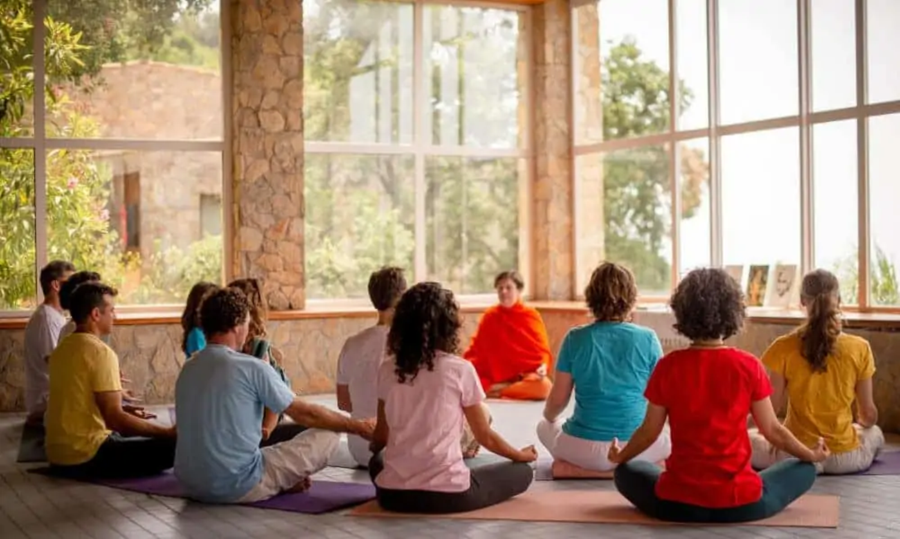
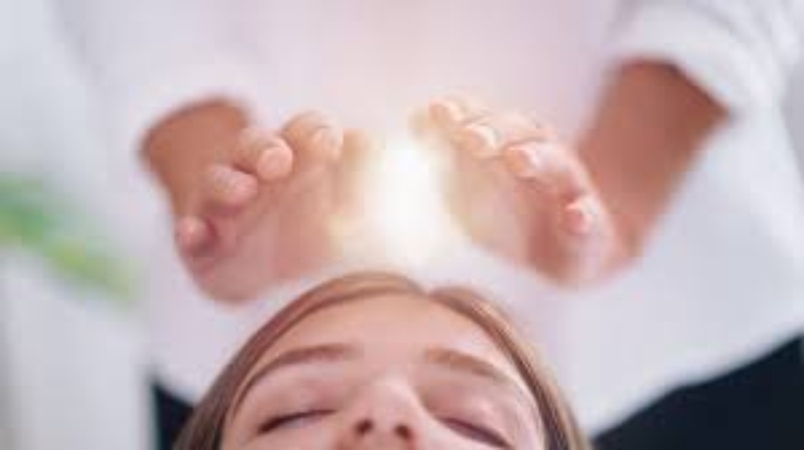

Una manera ambiciosa de meditación tiene como propósito lograr mantener la concentración en un punto sin sacrificio, enfocado a generar un estado de bienestar en cualquier situacion que se presente. O de igual manera, para aplicarlo en la práctica del budismo o el hinduismo, con el propósito de lograr la iluminación espiritual (Samadhi, Kenshō, etc.) que en dichas religiones orientales, sería uno de los caminos que lleva al objetivo final del Moksha o Nirvana.
Meditación y Reiki
Meditación
¿Qué es meditación?
La meditación es una práctica en la que la persona ejercita y habitúa la mente o se induce un modo de consciencia, tanto para adquirir un beneficio detrerminado como reconocer mentalmente un asunto sin sentirse identificado con dicho asunto, o como un fin en sí.
El término meditación se refiere a una gran gama de prácticas y técnicas ideadas para conseguir desde la relajación, hasta construir la energía interna o fuerza de vida (Qì, ki, chi, prāna, etc.) y desarrollar amor, compasión, templanza, empatía, gratitud y perdón.

La meditación es una práctica antigüa en muchas religiones, aun que no es una religión en sí misma. La meditación usualmente conlleva un esfuerzo interno para autorregular la mente de alguna manera.
Estudios
Estudio científicos demuestran que la meditación puede estar vinculada con cambios estructurales en áreas fundamentales del cerebro encargadas del procesamiento sensorial, cognitivo y emocional. Además, revelan que la meditación puede atenuar la disminución de la estructura cortical asociada al envejecimiento. Algunas técnicas favorecen a la concentración y reducen los efectos del estrés. Hay indicios que señalan al menos dos tipos de meditación que generan cambios en el hipocampo o la ínsula, los cuales podrían ser beneficiosos para la memoria.
Técnicas
Las técnicas de meditación pueden ir desde observar la respiración, visualizar un pensamiento positivo o imagen motivadora, enfocar algún objeto o imagen, las invocaciones, hasta las mas complejas que se sustentan en la alquimia espiritual. Por su parte están las meditaciones sin objeto, quitando la presión mental. Como también, se puede dejar fluir libremente los pensamiento, imágenes mentales, sensaciones, emociones, impulsos y energías corporales, ya sean claras o confusas, como cuando se está a punto de conciliar el sueño, normalmente sin intervenir pero tampoco deteniéndose en ellas, lo que finalmente provoca que se reordenen por sí solas; aunque existen técnicas de reflexión y concentración en las que la conciencia las puede controlar.
Reiki

¿Qué es Reiki?
Reiki es un tipo de medicina alternativa que se encuentra dentro de las terapias de energía. Se utiliza la imposición de manos o el toque terapéutico, para transferir al paciente una energia universal (Qì) a través de las palmas. Con el objetivo de impulsar la curación física o emocional.
Durante la sesión se ubican las manos sobre la parte afectada para canalizar la energía al cuerpo del receptor. Sin realizar masajes ni otra intervención física.
El reiki genera multiples efectos sobre el cuerpo y todas las patologías humanas responden positivamente, siendo capaz de sanar padecimientos físicos y emocionales como alergias, infecciones, disfunciones endocrinas, curar quemaduras sin dejar cicatrices, dolores crónicos, insomnio, estrés, depresíon, ansiedad, entre otros.
El reiki es un método de armonización natural que emplea la energía vital universal para tratar enfermedades y desequilibrios físicos, mentales y emocionales. Esto se consigue cuando el practicante comprende que todos tenemos la capacidad de conectarnos con nuestra propia energía curativa y la utiliza para fortalecer la energía en sí mismo y ayudar a los demás. El Qì de una persona debe ser fuerte y fluir libremente, de esta manera el cuerpo y la mente se encuentran en un estado de salud positivo. Cuando el Qì se debilita o se bloquea, puede generar desequilibrio físico o emocional, lo que el emisor mediante la práctica del reiki puede restaurar.